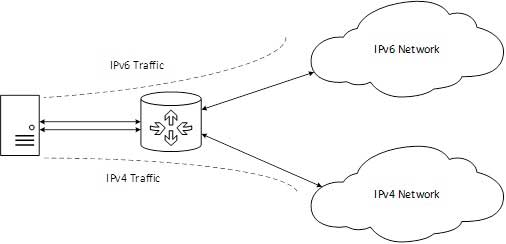
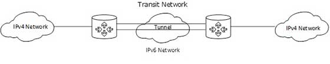
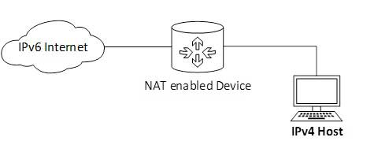

Transition From IPv4 to IPv6
Complete transition from IPv4 to IPv6 might not be possible because IPv6 is not backward compatible. This results in a situation where either a site is on IPv6 or it is not. It is unlike implementation of other new technologies where the newer one is backward compatible so the older system can still work with the newer version without any additional changes.
To overcome this short-coming, we have a few technologies that can be used to ensure slow and smooth transition from IPv4 to IPv6.
Dual Stack Routers
A router can be installed with both IPv4 and IPv6 addresses configured on its interfaces pointing to the network of relevant IP scheme.
In the above diagram, a server having IPv4 as well as IPv6 address configured for it can now speak with all the hosts on both the IPv4 as well as the IPv6 networks with the help of a Dual Stack Router. The Dual Stack Router, can communicate with both the networks. It provides a medium for the hosts to access a server without changing their respective IP versions.
Tunneling
In a scenario where different IP versions exist on intermediate path or transit networks, tunneling provides a better solution where user’s data can pass through a non-supported IP version.
The above diagram depicts how two remote IPv4 networks can communicate via a Tunnel, where the transit network was on IPv6. Vice versa is also possible where the transit network is on IPv6 and the remote sites that intend to communicate are on IPv4.
NAT Protocol Translation
This is another important method of transition to IPv6 by means of a NAT-PT (Network Address Translation – Protocol Translation) enabled device. With the help of a NAT-PT device, actual can take place happens between IPv4 and IPv6 packets and vice versa. See the diagram below:
A host with IPv4 address sends a request to an IPv6 enabled server on Internet that does not understand IPv4 address. In this scenario, the NAT-PT device can help them communicate. When the IPv4 host sends a request packet to the IPv6 server, the NAT-PT device/router strips down the IPv4 packet, removes IPv4 header, and adds IPv6 header and passes it through the Internet. When a response from the IPv6 server comes for the IPv4 host, the router does vice versa.